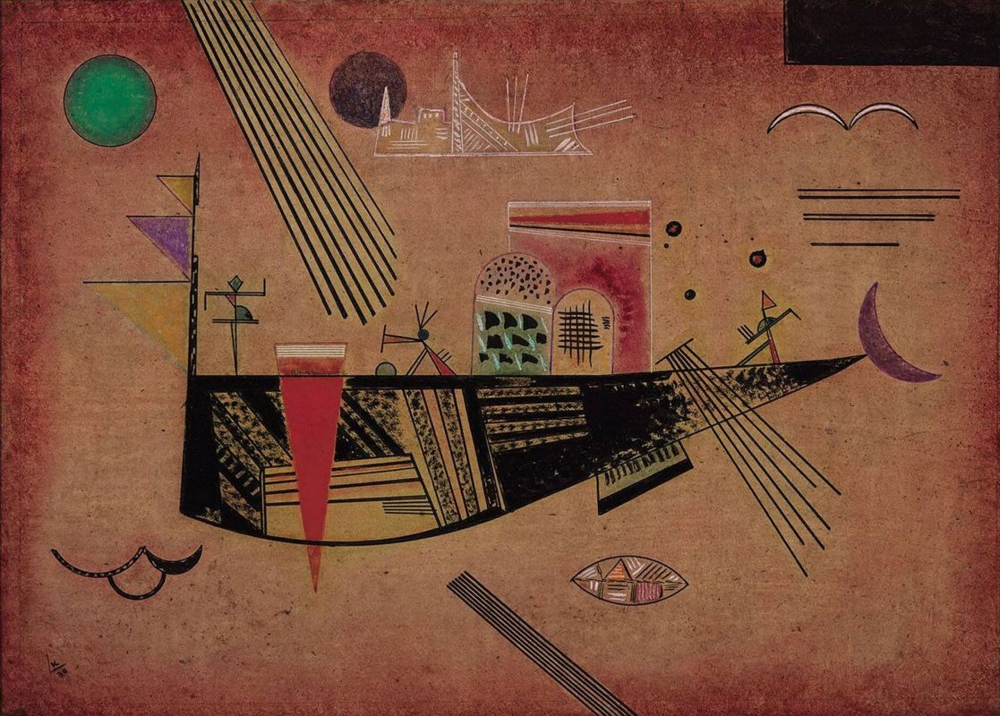

«Капризный»
Описание
Василий Кандинский, детство и юность которого прошли в приморской Одессе, на протяжении всего своего творческого пути часто обращался к морской тематике. Лодки, корабли, паруса и разнообразные морские жители появляются на его картинах одинаково часто в самые разные периоды творчества. Не является исключением и «Капризный», одна из поздних работ художника, центральную часть которой занимает большой корабль, чем-то похожий на футуристическую рыбу.
Несмотря на настойчивое желание исполнить свою почти религиозную миссию в искусстве и серьезные исследовательские труды в этой области, Кандинскому не была чужда некоторая шутливость, он мог говорить и писать о живописи с остроумными замечаниями, а некоторые его картины (особенно позднего периода) носят юмористический характер. Создается впечатление, что именно благодаря своему серьезному подходу к творчеству в ранние годы, Кандинский может позволить себе в конце концов внести в него некий элемент иронической игры.
Попытка проникнуть в секреты полотна «Капризный» оставляет больше вопросов, чем ответов. На первый взгляд здесь нет ничего необычного: центральный объект картины больше всего напоминает морское судно. Ряд деталей, окружающих его, только подтверждает это предположение: эллиптическую форму под корпусом корабля проще всего принять за рыбу, а сегменты кругов – за схематическое изображение волн. Треугольники на мачтах – сигнальные флажки, надстройка на палубе – капитанский мостик, а танцующие и жестикулирующие фигуры – команда.
Но не стоит забывать об абстрактной природе картины, в соответствии с которой все элементы здесь носят двусмысленный характер, включая даже неопределенность направления, в котором, как нам кажется, плывет корабль. И если исходить из предположения, что корабль – на самом деле вовсе не корабль, а вода – не вода, тогда мы можем увидеть изображение скорее какого-то «космического судна», дрейфующего по небосводу с двумя солнцами и полумесяцем. В этом случае можно выстроить вполне правдоподобную теорию о том, что Кандинский предвосхитил приближающуюся космическую эпоху, оживив на полотне фантазию писателей-фантастов.